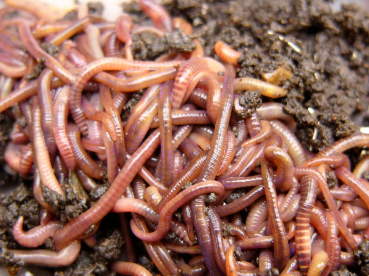
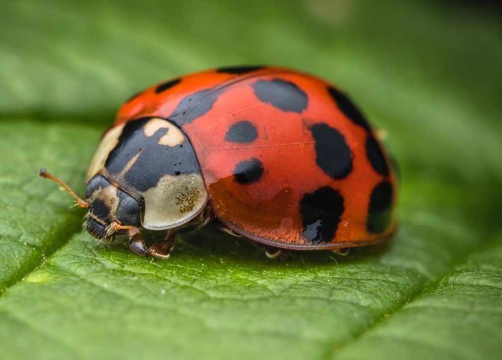
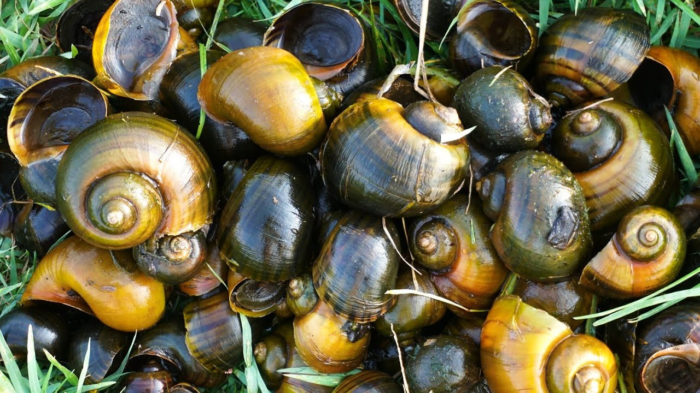

bebek

sumber gambar: pinterest
suara bebek 🦆
sumber audio: TikTok
bagian tubuh bebek
 paruh bebek untuk makan
paruh bebek untuk makan
 kaki bebek berselaput untuk berenang
kaki bebek berselaput untuk berenang
 sayap bebek untuk terbang rendah
sayap bebek untuk terbang rendah
 badan bebek untuk melindungi tubuh
badan bebek untuk melindungi tubuh
 mata bebek untuk melihat
mata bebek untuk melihat
 leher bebek
leher bebek
bebek bergerak
 bebek bisa berjalan di darat
bebek bisa berjalan di darat
 bebek bisa berenang di air
bebek bisa berenang di air
 bebek terbang rendah
bebek terbang rendah
pertumbuhan bebek
 telur bebek
telur bebek
 anak bebek
bebek dewasa
anak bebek
bebek dewasa
makanan bebek
padi sebagai makanan bebek

cacing sebagai makanan bebek

serangga kecil sebagai makanan bebek

keong sebagai makanan bebek
perkembang biak bebek
bebek bertelur
 bebek mengeram
induk bebek dan anak bebek
bebek mengeram
induk bebek dan anak bebek
hewan yang bisa berenang dan bisa di darat?
suara hewan ini milik siapa?
bagian tubuh ini milik hewan siapa?